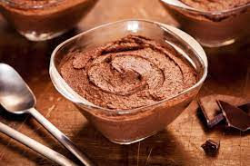

Musse de chocolate

Ingredientes
- 1 lata de leite condensado
- 500 ml de leite
- 3 colheres (sopa) de amido de milho
- 4 colheres (sopa) de chocolate em pó
- 1/2 lata de creme de leite gelada
- 1 colher (sobremesa) de essência de baunilha
Modo de preparo
- Bater no liquidificador o leite condensado, o leite, o amido de milho e o chocolate em pó.
- Levar ao fogo médio até engrossar, mexendo sempre.
- Bater no liquidificador com o creme de leite e a essência de baunilha.
- Levar para gelar antes de servir.
Observação:
Receita originalmente zero açúcar, utilizando leite condensado e chocolate em pó zero açúcar.